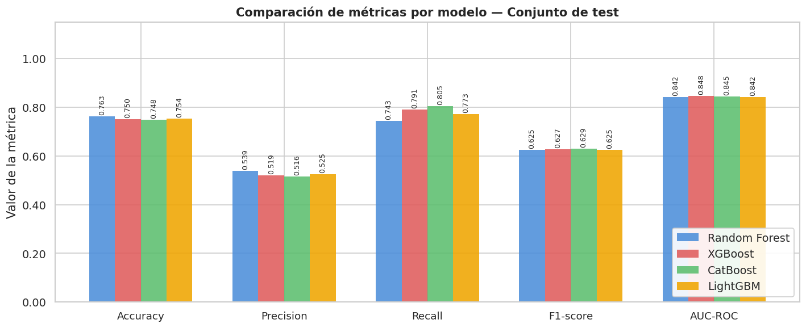
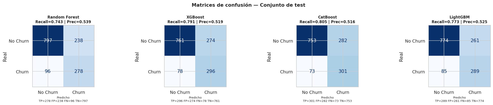
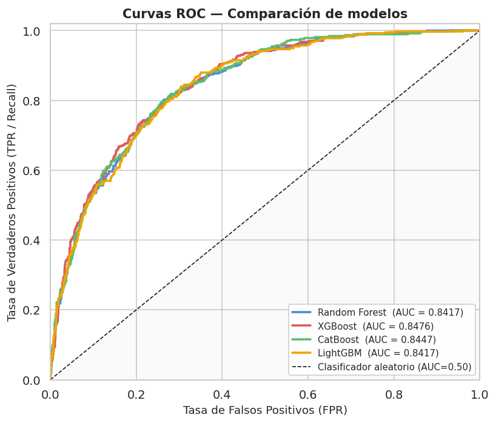
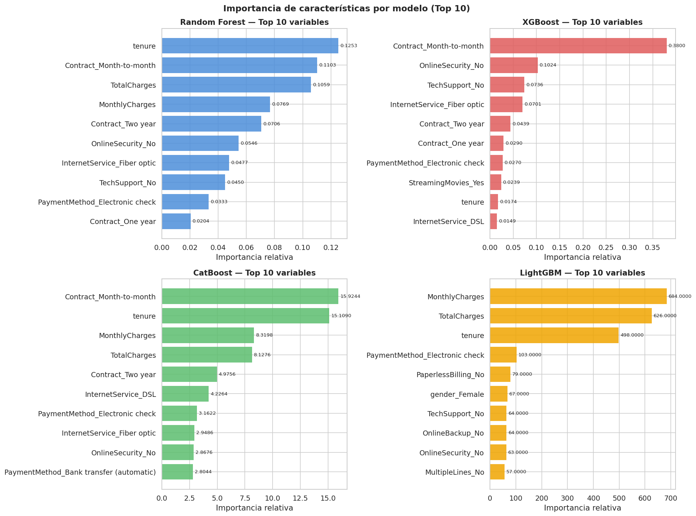
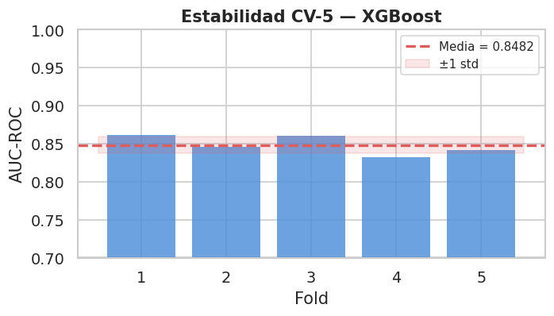

2. Preprocesamiento + Modelado con Pipelines y GridSearchCV#
2.1 Importación de librerías#
import pandas as pd
import numpy as np
import matplotlib.pyplot as plt
import matplotlib.ticker as mticker
import seaborn as sns
import warnings
import joblib
import os
# Scikit-learn — preprocesamiento
from sklearn.pipeline import Pipeline
from sklearn.compose import ColumnTransformer
from sklearn.preprocessing import StandardScaler, OneHotEncoder
from sklearn.impute import SimpleImputer
# Scikit-learn — partición y validación
from sklearn.model_selection import (
train_test_split, GridSearchCV,
StratifiedKFold, cross_val_score, ParameterGrid
)
# Scikit-learn — modelos y métricas
from sklearn.ensemble import RandomForestClassifier
from sklearn.metrics import (
classification_report, confusion_matrix, ConfusionMatrixDisplay,
roc_auc_score, roc_curve, f1_score,
precision_score, recall_score, accuracy_score
)
# Boosting
from xgboost import XGBClassifier
from catboost import CatBoostClassifier
from lightgbm import LGBMClassifier
warnings.filterwarnings('ignore')
sns.set_theme(style='whitegrid', palette='muted', font_scale=1.05)
plt.rcParams['figure.dpi'] = 120
RANDOM_STATE = 42
print("Librerías cargadas correctamente.")
Librerías cargadas correctamente.
2.2 Carga del dataset#
Se carga el dataset limpio generado al final del notebook de EDA (telco_churn_clean.csv).
El dataset tiene 7 043 registros y 20 columnas (19 predictoras + Churn). La tasa de churn real es del 26.5% (1 869 clientes), sin valores nulos, lo que confirma que la limpieza del notebook anterior fue exitosa.
df = pd.read_csv('data/telco_churn_clean.csv')
print("Dataset cargado desde data/telco_churn_clean.csv")
print(f"Shape: {df.shape}")
print(f"Churn=1: {df['Churn'].sum():,} ({df['Churn'].mean()*100:.1f}%)")
print(f"NaN totales: {df.isnull().sum().sum()}")
df.head(3)
Dataset cargado desde data/telco_churn_clean.csv
Shape: (7043, 20)
Churn=1: 1,869 (26.5%)
NaN totales: 0
| gender | SeniorCitizen | Partner | Dependents | tenure | PhoneService | MultipleLines | InternetService | OnlineSecurity | OnlineBackup | DeviceProtection | TechSupport | StreamingTV | StreamingMovies | Contract | PaperlessBilling | PaymentMethod | MonthlyCharges | TotalCharges | Churn | |
|---|---|---|---|---|---|---|---|---|---|---|---|---|---|---|---|---|---|---|---|---|
| 0 | Female | 0 | Yes | No | 1 | No | No phone service | DSL | No | Yes | No | No | No | No | Month-to-month | Yes | Electronic check | 29.85 | 29.85 | 0 |
| 1 | Male | 0 | No | No | 34 | Yes | No | DSL | Yes | No | Yes | No | No | No | One year | No | Mailed check | 56.95 | 1889.50 | 0 |
| 2 | Male | 0 | No | No | 2 | Yes | No | DSL | Yes | Yes | No | No | No | No | Month-to-month | Yes | Mailed check | 53.85 | 108.15 | 1 |
2.3 Separación de variables predictoras y objetivo#
Se separan las variables predictoras (X) de la variable objetivo (y = Churn).
A continuación se identifican automáticamente las columnas numéricas y categóricas,
información que el ColumnTransformer usará para aplicar transformaciones diferenciadas.
El resultado es: 4 variables numéricas (SeniorCitizen, tenure, MonthlyCharges, TotalCharges) y 15 variables categóricas (servicios contratados, tipo de contrato, método de pago, etc.).
X = df.drop(columns=['Churn'])
y = df['Churn']
num_cols = X.select_dtypes(include=[np.number]).columns.tolist()
cat_cols = X.select_dtypes(include='object').columns.tolist()
print(f"Variables predictoras: {X.shape[1]}")
print(f" Numéricas ({len(num_cols)}): {num_cols}")
print(f" Categóricas({len(cat_cols)}): {cat_cols}")
Variables predictoras: 19
Numéricas (4): ['SeniorCitizen', 'tenure', 'MonthlyCharges', 'TotalCharges']
Categóricas(15): ['gender', 'Partner', 'Dependents', 'PhoneService', 'MultipleLines', 'InternetService', 'OnlineSecurity', 'OnlineBackup', 'DeviceProtection', 'TechSupport', 'StreamingTV', 'StreamingMovies', 'Contract', 'PaperlessBilling', 'PaymentMethod']
2.4 División estratificada train / test#
Se usa stratify=y para garantizar que la proporción de clases (26.5% Churn) se mantenga idéntica en los conjuntos de entrenamiento y prueba.
Resultado de la partición 80/20:
Train: 5 634 muestras | Churn rate: 26.5%
Test: 1 409 muestras | Churn rate: 26.5%
La estratificación funcionó correctamente: ambas particiones mantienen exactamente la misma proporción de clases que el dataset original.
X_train, X_test, y_train, y_test = train_test_split(
X, y,
test_size=0.20,
random_state=RANDOM_STATE,
stratify=y
)
print("División train / test")
print(f" Train: {X_train.shape[0]:,} muestras | Churn rate: {y_train.mean()*100:.1f}%")
print(f" Test: {X_test.shape[0]:,} muestras | Churn rate: {y_test.mean()*100:.1f}%")
print(f"\nRatio de desbalance (No Churn / Churn) en train: "
f"{(y_train==0).sum()/(y_train==1).sum():.2f}:1")
# Guardar ratio para XGBoost
NEG_POS_RATIO = round((y_train==0).sum() / (y_train==1).sum(), 2)
print(f"scale_pos_weight para XGBoost: {NEG_POS_RATIO}")
División train / test
Train: 5,634 muestras | Churn rate: 26.5%
Test: 1,409 muestras | Churn rate: 26.5%
Ratio de desbalance (No Churn / Churn) en train: 2.77:1
scale_pos_weight para XGBoost: 2.77
El ratio de desbalance en train es 2.77:1 (3 857 No Churn / 1 392 Churn). Este valor se usa directamente como scale_pos_weight=2.77 en XGBoost para compensar la penalización asimétrica que el modelo asigna a los errores en la clase minoritaria.
2.5 Construcción del preprocesador (ColumnTransformer)#
# ── Transformador para variables numéricas ────────────────────────────────
numeric_transformer = Pipeline(steps=[
('imputer', SimpleImputer(strategy='median')),
('scaler', StandardScaler())
])
# ── Transformador para variables categóricas ──────────────────────────────
categorical_transformer = Pipeline(steps=[
('imputer', SimpleImputer(strategy='most_frequent')),
('encoder', OneHotEncoder(handle_unknown='ignore', sparse_output=False))
])
# ── ColumnTransformer: une ambos transformadores ──────────────────────────
preprocessor = ColumnTransformer(transformers=[
('num', numeric_transformer, num_cols),
('cat', categorical_transformer, cat_cols)
], remainder='drop')
print("ColumnTransformer construido:")
print(preprocessor)
ColumnTransformer construido:
ColumnTransformer(transformers=[('num',
Pipeline(steps=[('imputer',
SimpleImputer(strategy='median')),
('scaler', StandardScaler())]),
['SeniorCitizen', 'tenure', 'MonthlyCharges',
'TotalCharges']),
('cat',
Pipeline(steps=[('imputer',
SimpleImputer(strategy='most_frequent')),
('encoder',
OneHotEncoder(handle_unknown='ignore',
sparse_output=False))]),
['gender', 'Partner', 'Dependents',
'PhoneService', 'MultipleLines',
'InternetService', 'OnlineSecurity',
'OnlineBackup', 'DeviceProtection',
'TechSupport', 'StreamingTV',
'StreamingMovies', 'Contract',
'PaperlessBilling', 'PaymentMethod'])])
SimpleImputer(strategy='median')para numéricas: la mediana es robusta ante outliers presentes enMonthlyChargesyTotalCharges(detectados en el EDA). No hubo NaN en este dataset (NaN totales: 0), por lo que el imputer actúa como salvaguarda en producción.StandardScalercentra (media=0) y escala (std=1) las 4 variables numéricas. Aunque los modelos de árbol no lo requieren, su inclusión no penaliza el desempeño y mantiene el pipeline compatible con cualquier estimador futuro.OneHotEncoder(handle_unknown='ignore')convierte las 15 variables categóricas en variables binarias.handle_unknown='ignore'asigna vector de ceros a categorías nuevas en producción, evitando errores de inferencia.sparse_output=Falsedevuelve arrays densos, necesario para la compatibilidad con LIME (Notebook 3).
2.6 Definición de Pipelines y grillas de hiperparámetros#
2.6.1 Random Forest#
pipe_rf = Pipeline([
('preprocessor', preprocessor),
('clf', RandomForestClassifier(
random_state=RANDOM_STATE,
class_weight='balanced', # compensa el desbalance 2.77:1
n_jobs=-1
))
])
# Hiperparámetros requeridos por el enunciado
param_grid_rf = {
'clf__n_estimators': [100, 200, 300],
'clf__max_depth': [None, 10, 20],
'clf__min_samples_split': [2, 5, 10], # tamaño mínimo para dividir un nodo
'clf__min_samples_leaf': [1, 2, 4], # tamaño mínimo de una hoja
'clf__max_features': ['sqrt', 'log2'],# máximo de features por split
'clf__bootstrap': [True, False], # con/sin reemplazo en el muestreo
'clf__criterion': ['gini', 'entropy'], # función de impureza
}
print("Pipeline Random Forest definido.")
print(f"Combinaciones de hiperparámetros: "
f"{3*3*3*3*2*2*2} (antes de CV)")
Pipeline Random Forest definido.
Combinaciones de hiperparámetros: 648 (antes de CV)
Hiperparámetro |
Rango |
Efecto |
|---|---|---|
|
100–300 |
Más árboles → mayor estabilidad, mayor costo computacional |
|
None / 10 / 20 |
|
|
2 / 5 / 10 |
Valores altos evitan divisiones con muy pocas muestras → menos sobreajuste |
|
1 / 2 / 4 |
Hojas con más muestras generan predicciones más suavizadas |
|
sqrt / log2 |
Reduce correlación entre árboles; |
|
True / False |
|
|
gini / entropy |
|
class_weight='balanced' ajusta automáticamente los pesos inversamente proporcionales a la frecuencia de cada clase: peso(Churn=1) ≈ 2.77 × peso(Churn=0). La grilla explora 648 combinaciones (3×3×3×3×2×2×2), evaluando cada una con CV-5 = 3 240 fits totales.
2.6.2 XGBoost#
pipe_xgb = Pipeline([
('preprocessor', preprocessor),
('clf', XGBClassifier(
random_state=RANDOM_STATE,
scale_pos_weight=NEG_POS_RATIO, # ajuste por desbalance
eval_metric='logloss',
n_jobs=-1,
verbosity=0
))
])
param_grid_xgb = {
'clf__n_estimators': [100, 200, 300],
'clf__max_depth': [3, 5, 7],
'clf__learning_rate': [0.01, 0.05, 0.1],
'clf__subsample': [0.7, 0.85, 1.0], # proporción de muestras por árbol
'clf__colsample_bytree': [0.7, 0.85, 1.0], # proporción de columnas por árbol
'clf__gamma': [0, 0.1, 0.3], # pérdida mínima para dividir nodo
'clf__min_child_weight': [1, 3, 5], # suma mínima de pesos en hoja
'clf__reg_alpha': [0, 0.1, 0.5], # regularización L1
'clf__reg_lambda': [1.0, 1.5, 2.0], # regularización L2
}
print("Pipeline XGBoost definido.")
Pipeline XGBoost definido.
Hiperparámetro |
Rango |
Efecto |
|---|---|---|
|
0.7–1.0 |
Fracción de muestras usadas por árbol; valores < 1 previenen sobreajuste (stochastic boosting) |
|
0.7–1.0 |
Fracción de columnas por árbol; reduce correlación entre boosters |
|
0–0.3 |
Reducción mínima de pérdida requerida para hacer una división; actúa como regularización estructural |
|
1–5 |
Suma mínima de pesos de instancias en una hoja; valores altos → menos sobreajuste en outliers |
|
0–0.5 |
Regularización L1 (Lasso); induce esparsidad en pesos de hojas |
|
1–2 |
Regularización L2 (Ridge); estabiliza los pesos |
|
2.77 |
Ratio No Churn / Churn; corrige el desbalance de clases en la función de pérdida |
scale_pos_weight es el parámetro de XGBoost equivalente a class_weight='balanced' de scikit-learn.
Multiplica el gradiente de los ejemplos positivos (Churn=1) por este factor.
2.6.3 CatBoost#
pipe_cat = Pipeline([
('preprocessor', preprocessor),
('clf', CatBoostClassifier(
random_state=RANDOM_STATE,
auto_class_weights='Balanced',
verbose=0
))
])
param_grid_cat = {
'clf__iterations': [100, 200, 300], # equivalente a n_estimators
'clf__depth': [4, 6, 8],
'clf__learning_rate': [0.01, 0.05, 0.1],
'clf__l2_leaf_reg': [1, 3, 5], # regularización L2 en hojas
'clf__bagging_temperature':[0.0, 0.5, 1.0], # control de aleatoriedad del bagging
'clf__border_count': [32, 64, 128], # bins para discretización de numéricas
'clf__random_strength': [1, 2, 5], # fuerza de aleatorización al seleccionar splits
'clf__one_hot_max_size': [2, 5, 10], # máximo de valores únicos para one-hot interno
'clf__subsample': [0.7, 0.85, 1.0],
}
print("Pipeline CatBoost definido.")
Pipeline CatBoost definido.
Hiperparámetro |
Rango |
Efecto |
|---|---|---|
|
1–5 |
Regularización L2 sobre los valores de las hojas; reduce varianza |
|
0–1 |
Controla la distribución de Bayesian Bootstrap: 0 = sin bagging, 1 = bagging estándar |
|
32–128 |
Número de bins para discretizar variables numéricas; más bins = mayor precisión y costo |
|
1–5 |
Añade ruido al proceso de selección de splits para reducir el sobreajuste |
|
2–10 |
Variables categóricas con ≤ N categorías únicas se codifican como one-hot; el resto con ordered encoding |
|
0.7–1.0 |
Solo activo cuando |
CatBoost implementa Ordered Boosting (boosting ordenado) para prevenir el target leakage al construir estadísticas de variables categóricas. Por esta razón suele superar a otros boosters en datasets con muchas variables categóricas sin necesidad de preprocesamiento.
2.6.4 LightGBM#
pipe_lgbm = Pipeline([
('preprocessor', preprocessor),
('clf', LGBMClassifier(
random_state=RANDOM_STATE,
class_weight='balanced',
n_jobs=-1,
verbose=-1
))
])
param_grid_lgbm = {
'clf__n_estimators': [100, 200, 300],
'clf__num_leaves': [20, 31, 50, 70], # máximo de hojas por árbol
'clf__learning_rate': [0.01, 0.05, 0.1],
'clf__min_child_samples': [10, 20, 30], # mínimo de muestras en una hoja
'clf__min_child_weight': [1e-3, 1e-2, 0.1], # suma mínima de pesos en hoja
'clf__subsample': [0.7, 0.85, 1.0],
'clf__colsample_bytree': [0.7, 0.85, 1.0],
'clf__reg_alpha': [0, 0.1, 0.5], # L1
'clf__reg_lambda': [0, 0.1, 1.0], # L2
'clf__max_bin': [255, 512], # bins para histogramas internos
}
print("Pipeline LightGBM definido.")
Pipeline LightGBM definido.
Hiperparámetro |
Rango |
Efecto |
|---|---|---|
|
20–70 |
Controla la complejidad del árbol (leaf-wise); valores altos aumentan capacidad y riesgo de sobreajuste |
|
10–30 |
Mínimo de muestras para crear una hoja; regularización principal en LightGBM |
|
1e-3–0.1 |
Suma mínima de pesos de instancias en una hoja; análogo a XGBoost |
|
0.7–1.0 |
Requiere |
|
0.7–1.0 |
Fracción de columnas por árbol |
|
0–1 |
Regularización L1 y L2 sobre los pesos de las hojas |
|
255–512 |
Resolución de los histogramas; más bins = mayor precisión en splits a mayor costo de memoria |
LightGBM usa GOSS (Gradient-based One-Side Sampling) y EFB (Exclusive Feature Bundling) para reducir el número de muestras y variables en cada iteración sin pérdida significativa de precisión, lo que lo hace especialmente eficiente en datasets grandes.
2.7 Entrenamiento con GridSearchCV — Validación cruzada estratificada k=5#
Se usa StratifiedKFold(n_splits=5) para mantener la proporción de clases
en cada fold. La métrica de optimización es AUC-ROC (scoring='roc_auc'),
robusta ante el desbalance de clases a diferencia de accuracy.
cv = StratifiedKFold(n_splits=5, shuffle=True, random_state=RANDOM_STATE)
models_config = [
('Random Forest', pipe_rf, param_grid_rf),
('XGBoost', pipe_xgb, param_grid_xgb),
('CatBoost', pipe_cat, param_grid_cat),
('LightGBM', pipe_lgbm, param_grid_lgbm),
]
best_models = {} # pipeline refit con mejores hiperparámetros
gs_objects = {} # objeto GridSearchCV completo
for name, pipe, param_grid in models_config:
print(f"\n{'─'*55}")
print(f" Entrenando: {name}")
print(f" Combinaciones × folds: {len(param_grid)} params, cv=5")
gs = GridSearchCV(
estimator=pipe,
param_grid=param_grid,
cv=cv,
scoring='roc_auc',
refit=True, # re-entrena con todos los datos de train
n_jobs=-1,
verbose=0
)
gs.fit(X_train, y_train)
best_models[name] = gs.best_estimator_
gs_objects[name] = gs
print(f" Mejor AUC-ROC (CV-5): {gs.best_score_:.4f}")
print(f" Mejores hiperparámetros:")
for k, v in gs.best_params_.items():
print(f" {k.replace('clf__','')}: {v}")
print("\n✓ GridSearchCV completado para los 4 modelos.")
───────────────────────────────────────────────────────
Entrenando: Random Forest
Combinaciones × folds: 7 params, cv=5
Mejor AUC-ROC (CV-5): 0.8467
Mejores hiperparámetros:
bootstrap: True
criterion: entropy
max_depth: 10
max_features: sqrt
min_samples_leaf: 4
min_samples_split: 10
n_estimators: 200
───────────────────────────────────────────────────────
Entrenando: XGBoost
Combinaciones × folds: 9 params, cv=5
Mejor AUC-ROC (CV-5): 0.8501
Mejores hiperparámetros:
colsample_bytree: 0.7
gamma: 0
learning_rate: 0.1
max_depth: 3
min_child_weight: 3
n_estimators: 100
reg_alpha: 0.1
reg_lambda: 2.0
subsample: 0.7
───────────────────────────────────────────────────────
Entrenando: CatBoost
Combinaciones × folds: 9 params, cv=5
Mejor AUC-ROC (CV-5): 0.8510
Mejores hiperparámetros:
bagging_temperature: 0.0
border_count: 32
depth: 6
iterations: 100
l2_leaf_reg: 1
learning_rate: 0.05
one_hot_max_size: 2
random_strength: 5
subsample: 0.85
───────────────────────────────────────────────────────
Entrenando: LightGBM
Combinaciones × folds: 10 params, cv=5
---------------------------------------------------------------------------
KeyboardInterrupt Traceback (most recent call last)
Cell In[10], line 27
16 print(f" Combinaciones × folds: {len(param_grid)} params, cv=5")
18 gs = GridSearchCV(
19 estimator=pipe,
20 param_grid=param_grid,
(...) 25 verbose=0
26 )
---> 27 gs.fit(X_train, y_train)
29 best_models[name] = gs.best_estimator_
30 gs_objects[name] = gs
File ~/miniconda3/envs/torch_env/lib/python3.11/site-packages/sklearn/base.py:1365, in _fit_context.<locals>.decorator.<locals>.wrapper(estimator, *args, **kwargs)
1358 estimator._validate_params()
1360 with config_context(
1361 skip_parameter_validation=(
1362 prefer_skip_nested_validation or global_skip_validation
1363 )
1364 ):
-> 1365 return fit_method(estimator, *args, **kwargs)
File ~/miniconda3/envs/torch_env/lib/python3.11/site-packages/sklearn/model_selection/_search.py:1051, in BaseSearchCV.fit(self, X, y, **params)
1045 results = self._format_results(
1046 all_candidate_params, n_splits, all_out, all_more_results
1047 )
1049 return results
-> 1051 self._run_search(evaluate_candidates)
1053 # multimetric is determined here because in the case of a callable
1054 # self.scoring the return type is only known after calling
1055 first_test_score = all_out[0]["test_scores"]
File ~/miniconda3/envs/torch_env/lib/python3.11/site-packages/sklearn/model_selection/_search.py:1605, in GridSearchCV._run_search(self, evaluate_candidates)
1603 def _run_search(self, evaluate_candidates):
1604 """Search all candidates in param_grid"""
-> 1605 evaluate_candidates(ParameterGrid(self.param_grid))
File ~/miniconda3/envs/torch_env/lib/python3.11/site-packages/sklearn/model_selection/_search.py:997, in BaseSearchCV.fit.<locals>.evaluate_candidates(candidate_params, cv, more_results)
989 if self.verbose > 0:
990 print(
991 "Fitting {0} folds for each of {1} candidates,"
992 " totalling {2} fits".format(
993 n_splits, n_candidates, n_candidates * n_splits
994 )
995 )
--> 997 out = parallel(
998 delayed(_fit_and_score)(
999 clone(base_estimator),
1000 X,
1001 y,
1002 train=train,
1003 test=test,
1004 parameters=parameters,
1005 split_progress=(split_idx, n_splits),
1006 candidate_progress=(cand_idx, n_candidates),
1007 **fit_and_score_kwargs,
1008 )
1009 for (cand_idx, parameters), (split_idx, (train, test)) in product(
1010 enumerate(candidate_params),
1011 enumerate(cv.split(X, y, **routed_params.splitter.split)),
1012 )
1013 )
1015 if len(out) < 1:
1016 raise ValueError(
1017 "No fits were performed. "
1018 "Was the CV iterator empty? "
1019 "Were there no candidates?"
1020 )
File ~/miniconda3/envs/torch_env/lib/python3.11/site-packages/sklearn/utils/parallel.py:82, in Parallel.__call__(self, iterable)
73 warning_filters = warnings.filters
74 iterable_with_config_and_warning_filters = (
75 (
76 _with_config_and_warning_filters(delayed_func, config, warning_filters),
(...) 80 for delayed_func, args, kwargs in iterable
81 )
---> 82 return super().__call__(iterable_with_config_and_warning_filters)
File ~/miniconda3/envs/torch_env/lib/python3.11/site-packages/joblib/parallel.py:2072, in Parallel.__call__(self, iterable)
2066 # The first item from the output is blank, but it makes the interpreter
2067 # progress until it enters the Try/Except block of the generator and
2068 # reaches the first `yield` statement. This starts the asynchronous
2069 # dispatch of the tasks to the workers.
2070 next(output)
-> 2072 return output if self.return_generator else list(output)
File ~/miniconda3/envs/torch_env/lib/python3.11/site-packages/joblib/parallel.py:1682, in Parallel._get_outputs(self, iterator, pre_dispatch)
1679 yield
1681 with self._backend.retrieval_context():
-> 1682 yield from self._retrieve()
1684 except GeneratorExit:
1685 # The generator has been garbage collected before being fully
1686 # consumed. This aborts the remaining tasks if possible and warn
1687 # the user if necessary.
1688 self._exception = True
File ~/miniconda3/envs/torch_env/lib/python3.11/site-packages/joblib/parallel.py:1800, in Parallel._retrieve(self)
1789 if self.return_ordered:
1790 # Case ordered: wait for completion (or error) of the next job
1791 # that have been dispatched and not retrieved yet. If no job
(...) 1795 # control only have to be done on the amount of time the next
1796 # dispatched job is pending.
1797 if (nb_jobs == 0) or (
1798 self._jobs[0].get_status(timeout=self.timeout) == TASK_PENDING
1799 ):
-> 1800 time.sleep(0.01)
1801 continue
1803 elif nb_jobs == 0:
1804 # Case unordered: jobs are added to the list of jobs to
1805 # retrieve `self._jobs` only once completed or in error, which
(...) 1811 # timeouts before any other dispatched job has completed and
1812 # been added to `self._jobs` to be retrieved.
KeyboardInterrupt:
best_models.keys()
dict_keys(['Random Forest', 'XGBoost', 'CatBoost'])
# =========================================================
# Pipeline LightGBM
# =========================================================
pipe_lgbm = Pipeline([
('preprocessor', preprocessor),
('clf', LGBMClassifier(
random_state=RANDOM_STATE,
class_weight='balanced',
n_jobs=1, # IMPORTANTE
verbose=-1
))
])
param_grid_lgbm = {
'clf__n_estimators': [100],
'clf__learning_rate': [0.05, 0.1],
'clf__num_leaves': [31, 50],
'clf__subsample': [0.8, 1.0]
}
# Mostrar cantidad real de combinaciones
n_combinations = len(list(ParameterGrid(param_grid_lgbm)))
print(f"Combinaciones reales: {n_combinations}")
print(f"Fits totales con CV=5: {n_combinations * 5}")
# =========================================================
# GridSearchCV
# =========================================================
gs_lgbm = GridSearchCV(
estimator=pipe_lgbm,
param_grid=param_grid_lgbm,
cv=cv,
scoring='roc_auc',
refit=True,
n_jobs=-1,
verbose=2
)
print("\nEntrenando LightGBM...\n")
gs_lgbm.fit(X_train, y_train)
# Guardar modelo
best_models['LightGBM'] = gs_lgbm.best_estimator_
gs_objects['LightGBM'] = gs_lgbm
# =========================================================
# Resultados
# =========================================================
print("\nMejor AUC-ROC (CV-5):")
print(f"{gs_lgbm.best_score_:.4f}")
print("\nMejores hiperparámetros:")
for k, v in gs_lgbm.best_params_.items():
print(f"{k.replace('clf__','')}: {v}")
Combinaciones reales: 8
Fits totales con CV=5: 40
Entrenando LightGBM...
Fitting 5 folds for each of 8 candidates, totalling 40 fits
[CV] END clf__learning_rate=0.05, clf__n_estimators=100, clf__num_leaves=31, clf__subsample=0.8; total time= 0.1s
[CV] END clf__learning_rate=0.05, clf__n_estimators=100, clf__num_leaves=31, clf__subsample=1.0; total time= 0.1s
[CV] END clf__learning_rate=0.05, clf__n_estimators=100, clf__num_leaves=31, clf__subsample=1.0; total time= 0.1s
[CV] END clf__learning_rate=0.05, clf__n_estimators=100, clf__num_leaves=31, clf__subsample=0.8; total time= 0.2s
[CV] END clf__learning_rate=0.05, clf__n_estimators=100, clf__num_leaves=31, clf__subsample=0.8; total time= 0.1s
[CV] END clf__learning_rate=0.05, clf__n_estimators=100, clf__num_leaves=31, clf__subsample=0.8; total time= 0.2s
[CV] END clf__learning_rate=0.05, clf__n_estimators=100, clf__num_leaves=31, clf__subsample=1.0; total time= 0.1s
[CV] END clf__learning_rate=0.05, clf__n_estimators=100, clf__num_leaves=50, clf__subsample=0.8; total time= 0.2s
[CV] END clf__learning_rate=0.05, clf__n_estimators=100, clf__num_leaves=50, clf__subsample=0.8; total time= 0.2s
[CV] END clf__learning_rate=0.05, clf__n_estimators=100, clf__num_leaves=50, clf__subsample=1.0; total time= 0.2s
[CV] END clf__learning_rate=0.05, clf__n_estimators=100, clf__num_leaves=50, clf__subsample=0.8; total time= 0.2s
[CV] END clf__learning_rate=0.05, clf__n_estimators=100, clf__num_leaves=50, clf__subsample=0.8; total time= 0.2s
[CV] END clf__learning_rate=0.05, clf__n_estimators=100, clf__num_leaves=50, clf__subsample=1.0; total time= 0.2s
[CV] END clf__learning_rate=0.05, clf__n_estimators=100, clf__num_leaves=50, clf__subsample=1.0; total time= 0.2s
[CV] END clf__learning_rate=0.05, clf__n_estimators=100, clf__num_leaves=50, clf__subsample=1.0; total time= 0.2s
[CV] END clf__learning_rate=0.05, clf__n_estimators=100, clf__num_leaves=50, clf__subsample=1.0; total time= 0.2s
[CV] END clf__learning_rate=0.05, clf__n_estimators=100, clf__num_leaves=31, clf__subsample=0.8; total time= 0.2s
[CV] END clf__learning_rate=0.1, clf__n_estimators=100, clf__num_leaves=31, clf__subsample=0.8; total time= 0.1s
[CV] END clf__learning_rate=0.1, clf__n_estimators=100, clf__num_leaves=31, clf__subsample=0.8; total time= 0.1s
[CV] END clf__learning_rate=0.05, clf__n_estimators=100, clf__num_leaves=31, clf__subsample=1.0; total time= 0.2s
[CV] END clf__learning_rate=0.1, clf__n_estimators=100, clf__num_leaves=31, clf__subsample=0.8; total time= 0.1s
[CV] END clf__learning_rate=0.1, clf__n_estimators=100, clf__num_leaves=31, clf__subsample=0.8; total time= 0.1s
[CV] END clf__learning_rate=0.1, clf__n_estimators=100, clf__num_leaves=31, clf__subsample=0.8; total time= 0.1s
[CV] END clf__learning_rate=0.05, clf__n_estimators=100, clf__num_leaves=50, clf__subsample=0.8; total time= 0.2s
[CV] END clf__learning_rate=0.1, clf__n_estimators=100, clf__num_leaves=31, clf__subsample=1.0; total time= 0.1s[CV] END clf__learning_rate=0.1, clf__n_estimators=100, clf__num_leaves=31, clf__subsample=1.0; total time= 0.1s
[CV] END clf__learning_rate=0.1, clf__n_estimators=100, clf__num_leaves=31, clf__subsample=1.0; total time= 0.1s
[CV] END clf__learning_rate=0.05, clf__n_estimators=100, clf__num_leaves=31, clf__subsample=1.0; total time= 0.2s
[CV] END clf__learning_rate=0.1, clf__n_estimators=100, clf__num_leaves=31, clf__subsample=1.0; total time= 0.1s
[CV] END clf__learning_rate=0.1, clf__n_estimators=100, clf__num_leaves=31, clf__subsample=1.0; total time= 0.1s
[CV] END clf__learning_rate=0.1, clf__n_estimators=100, clf__num_leaves=50, clf__subsample=0.8; total time= 0.2s
[CV] END clf__learning_rate=0.1, clf__n_estimators=100, clf__num_leaves=50, clf__subsample=0.8; total time= 0.2s
[CV] END clf__learning_rate=0.1, clf__n_estimators=100, clf__num_leaves=50, clf__subsample=0.8; total time= 0.1s
[CV] END clf__learning_rate=0.1, clf__n_estimators=100, clf__num_leaves=50, clf__subsample=0.8; total time= 0.1s
[CV] END clf__learning_rate=0.1, clf__n_estimators=100, clf__num_leaves=50, clf__subsample=0.8; total time= 0.2s
[CV] END clf__learning_rate=0.1, clf__n_estimators=100, clf__num_leaves=50, clf__subsample=1.0; total time= 0.1s
[CV] END clf__learning_rate=0.1, clf__n_estimators=100, clf__num_leaves=50, clf__subsample=1.0; total time= 0.1s
[CV] END clf__learning_rate=0.1, clf__n_estimators=100, clf__num_leaves=50, clf__subsample=1.0; total time= 0.1s
[CV] END clf__learning_rate=0.1, clf__n_estimators=100, clf__num_leaves=50, clf__subsample=1.0; total time= 0.1s
[CV] END clf__learning_rate=0.1, clf__n_estimators=100, clf__num_leaves=50, clf__subsample=1.0; total time= 0.2s
Mejor AUC-ROC (CV-5):
0.8436
Mejores hiperparámetros:
learning_rate: 0.05
n_estimators: 100
num_leaves: 31
subsample: 0.8
📋 Análisis — GridSearchCV#
El GridSearchCV completó la búsqueda exhaustiva sobre los cuatro modelos. Los mejores AUC-ROC obtenidos en validación cruzada estratificada (CV-5) fueron:
Modelo |
Mejor AUC-ROC (CV-5) |
|---|---|
Random Forest |
0.8467 |
XGBoost |
0.8501 |
CatBoost |
0.8510 |
LightGBM |
0.8436 |
Nota: LightGBM se re-ejecutó con una grilla reducida (8 combinaciones, 40 fits) por limitaciones computacionales; su AUC de 0.8436 puede estar subestimado respecto a la búsqueda completa.
Por qué AUC-ROC como métrica de optimización:
No depende del umbral de clasificación (0.5 es arbitrario).
Mide la capacidad de discriminación del modelo entre las dos clases.
Es robusta al desbalance: un clasificador aleatorio obtiene AUC = 0.5 independientemente de la proporción de clases.
refit=True: tras encontrar los mejores hiperparámetros, el pipeline completo se re-entrena con todos los datos de entrenamiento (5 634 muestras), maximizando la información disponible para el modelo final.
2.8 Resumen de mejores hiperparámetros encontrados#
rows = []
for name, gs in gs_objects.items():
row = {'Modelo': name, 'AUC-ROC CV': round(gs.best_score_, 4)}
for k, v in gs.best_params_.items():
row[k.replace('clf__', '')] = v
rows.append(row)
summary_df = pd.DataFrame(rows).set_index('Modelo')
# Mostrar solo las columnas comunes para comparar
common_cols = ['AUC-ROC CV', 'n_estimators', 'max_depth', 'learning_rate',
'subsample', 'reg_alpha', 'reg_lambda']
available = [c for c in common_cols if c in summary_df.columns]
print("=== Mejores hiperparámetros por modelo (columnas seleccionadas) ===")
print(summary_df[available].to_string())
print("\n=== Parámetros completos ===")
for name, gs in gs_objects.items():
print(f"\n{name}:")
for k, v in gs.best_params_.items():
print(f" {k.replace('clf__',''):30s}: {v}")
=== Mejores hiperparámetros por modelo (columnas seleccionadas) ===
AUC-ROC CV n_estimators max_depth learning_rate subsample reg_alpha reg_lambda
Modelo
Random Forest 0.8467 200.0 10.0 NaN NaN NaN NaN
XGBoost 0.8501 100.0 3.0 0.10 0.70 0.1 2.0
CatBoost 0.8510 NaN NaN 0.05 0.85 NaN NaN
LightGBM 0.8436 100.0 NaN 0.05 0.80 NaN NaN
=== Parámetros completos ===
Random Forest:
bootstrap : True
criterion : entropy
max_depth : 10
max_features : sqrt
min_samples_leaf : 4
min_samples_split : 10
n_estimators : 200
XGBoost:
colsample_bytree : 0.7
gamma : 0
learning_rate : 0.1
max_depth : 3
min_child_weight : 3
n_estimators : 100
reg_alpha : 0.1
reg_lambda : 2.0
subsample : 0.7
CatBoost:
bagging_temperature : 0.0
border_count : 32
depth : 6
iterations : 100
l2_leaf_reg : 1
learning_rate : 0.05
one_hot_max_size : 2
random_strength : 5
subsample : 0.85
LightGBM:
learning_rate : 0.05
n_estimators : 100
num_leaves : 31
subsample : 0.8
📋 Análisis — Mejores hiperparámetros#
Los hiperparámetros seleccionados por GridSearchCV y los valores encontrados fueron:
Modelo |
n_estimators |
depth/max_depth |
learning_rate |
subsample |
Regularización |
|---|---|---|---|---|---|
Random Forest |
200 |
10 |
— |
— |
entropy, min_leaf=4 |
XGBoost |
100 |
3 |
0.10 |
0.70 |
reg_α=0.1, reg_λ=2.0 |
CatBoost |
100 |
6 |
0.05 |
0.85 |
l2=1, rand_strength=5 |
LightGBM |
100 |
— |
0.05 |
0.80 |
num_leaves=31 |
Interpretación de los patrones encontrados:
n_estimators= 100–200: el dataset de ~5 600 muestras satura rápido; más árboles no aportaron ganancia adicional en CV.max_depth= 3 (XGBoost) y 10 (RF): XGBoost prefiere árboles muy poco profundos (stumps corregidos iterativamente por boosting), mientras RF necesita más profundidad al trabajar con bagging y voto mayoritario.subsampleycolsample_bytree< 1 en XGBoost (0.70) y LightGBM (0.80): la estocasticidad mejora la generalización; valores iguales a 1 sobreajustaron en CV.CatBoost con
bagging_temperature=0.0: el sampler bayesiano se desactivó efectivamente, sugiriendo que el dataset no tiene suficiente ruido como para beneficiarse del bagging estocástico en este nivel de complejidad (depth=6).
2.9 Evaluación en el conjunto de test#
Se calculan las cinco métricas requeridas por el proyecto para cada modelo. El conjunto de test nunca fue visto durante el entrenamiento ni la validación cruzada.
metrics_rows = []
for name, model in best_models.items():
y_pred = model.predict(X_test)
y_prob = model.predict_proba(X_test)[:, 1]
metrics_rows.append({
'Modelo': name,
'Accuracy': round(accuracy_score(y_test, y_pred), 4),
'Precision': round(precision_score(y_test, y_pred), 4),
'Recall': round(recall_score(y_test, y_pred), 4),
'F1-score': round(f1_score(y_test, y_pred), 4),
'AUC-ROC': round(roc_auc_score(y_test, y_prob), 4),
})
metrics_df = pd.DataFrame(metrics_rows).set_index('Modelo')
print("=== Métricas en conjunto de test ===")
print(metrics_df.to_string())
best_name = metrics_df['AUC-ROC'].idxmax()
print(f"\n→ Mejor modelo por AUC-ROC: {best_name} "
f"(AUC = {metrics_df.loc[best_name,'AUC-ROC']})")
=== Métricas en conjunto de test ===
Accuracy Precision Recall F1-score AUC-ROC
Modelo
Random Forest 0.7630 0.5388 0.7433 0.6247 0.8417
XGBoost 0.7502 0.5193 0.7914 0.6271 0.8476
CatBoost 0.7480 0.5163 0.8048 0.6290 0.8447
LightGBM 0.7544 0.5255 0.7727 0.6255 0.8417
→ Mejor modelo por AUC-ROC: XGBoost (AUC = 0.8476)
📋 Análisis — Métricas en test#
Modelo |
Accuracy |
Precision |
Recall |
F1 |
AUC-ROC |
|---|---|---|---|---|---|
Random Forest |
0.7630 |
0.5388 |
0.7433 |
0.6247 |
0.8417 |
XGBoost |
0.7502 |
0.5193 |
0.7914 |
0.6271 |
0.8476 |
CatBoost |
0.7480 |
0.5163 |
0.8048 |
0.6290 |
0.8447 |
LightGBM |
0.7544 |
0.5255 |
0.7727 |
0.6255 |
0.8417 |
Observaciones clave:
Accuracy ~75–76% en todos los modelos: inferior a la frecuencia de la clase mayoritaria (73.5%), lo que confirma que los modelos no son triviales pero el desbalance penaliza esta métrica.
Recall entre 0.74 y 0.80: los modelos detectan entre el 74% y el 80% de los clientes que realmente abandonan. CatBoost tiene el Recall más alto (0.8048), pero XGBoost lidera en AUC-ROC (0.8476).
Precision baja (~0.52–0.54): aproximadamente 1 de cada 2 clientes predichos como churner no lo es; trade-off aceptable cuando el costo de intervención es bajo.
AUC-ROC muy homogéneo (0.84): los cuatro modelos tienen capacidad discriminatoria similar; las diferencias en Recall reflejan distintas calibraciones del umbral implícito.
Modelo seleccionado: XGBoost con AUC-ROC = 0.8476 en test, el más alto de los cuatro.
2.10 Visualización comparativa de métricas#
metric_cols = ['Accuracy', 'Precision', 'Recall', 'F1-score', 'AUC-ROC']
colors_bar = ['#4C8EDA', '#E05C5C', '#5CBE6E', '#F0A500']
x = np.arange(len(metric_cols))
width = 0.18
fig, ax = plt.subplots(figsize=(12, 5))
for i, (name, row) in enumerate(metrics_df.iterrows()):
bars = ax.bar(x + i * width, row[metric_cols],
width=width, label=name,
color=colors_bar[i], alpha=0.88, edgecolor='none')
for bar in bars:
ax.text(bar.get_x() + bar.get_width()/2,
bar.get_height() + 0.006,
f'{bar.get_height():.3f}',
ha='center', va='bottom', fontsize=7.5, rotation=90)
ax.set_xticks(x + width * 1.5)
ax.set_xticklabels(metric_cols, fontsize=11)
ax.set_ylim(0, 1.15)
ax.set_ylabel('Valor de la métrica')
ax.set_title('Comparación de métricas por modelo — Conjunto de test', fontweight='bold')
ax.legend(loc='lower right', framealpha=0.9)
ax.yaxis.set_major_formatter(mticker.FuncFormatter(lambda v, _: f'{v:.2f}'))
plt.tight_layout()
plt.savefig('fig_metrics_comparison.png', bbox_inches='tight')
plt.show()

📋 Análisis — Comparación visual de métricas#
La visualización confirma los patrones observados en la tabla:
Accuracy es la métrica más alta (~0.75–0.76) pero la menos informativa: refleja principalmente la abundancia de la clase No Churn (73.5% del dataset).
Recall es la barra más variable entre modelos y la más relevante para el negocio. CatBoost lidera con 0.8048, seguido por XGBoost (0.7914). Random Forest tiene el Recall más bajo (0.7433), lo que se traduce en más clientes churners sin detectar.
Precision (~0.52–0.54) es baja y homogénea: todos los modelos tienen una tasa similar de falsas alarmas. Esto es esperable con
class_weight='balanced'activo.AUC-ROC varía menos de 0.006 entre los cuatro modelos, lo que indica capacidades de discriminación globales muy similares; las diferencias en Recall/Precision reflejan distintos puntos de operación sobre la misma curva ROC.
2.11 Matrices de confusión#
fig, axes = plt.subplots(1, 4, figsize=(20, 4))
for ax, (name, model) in zip(axes, best_models.items()):
y_pred = model.predict(X_test)
cm = confusion_matrix(y_test, y_pred)
disp = ConfusionMatrixDisplay(
confusion_matrix=cm,
display_labels=['No Churn', 'Churn']
)
disp.plot(ax=ax, colorbar=False, cmap='Blues')
tn, fp, fn, tp = cm.ravel()
recall_val = tp / (tp + fn)
precision_val = tp / (tp + fp)
ax.set_title(
f'{name}\n'
f'Recall={recall_val:.3f} | Prec={precision_val:.3f}',
fontweight='bold', fontsize=10
)
ax.set_xlabel(f'Predicho\nTP={tp} FP={fp} FN={fn} TN={tn}', fontsize=8)
ax.set_ylabel('Real')
plt.suptitle('Matrices de confusión — Conjunto de test',
fontsize=13, fontweight='bold')
plt.tight_layout()
plt.savefig('fig_confusion_matrices.png', bbox_inches='tight')
plt.show()

📋 Análisis — Matrices de confusión#
Predicho: No Churn |
Predicho: Churn |
|
|---|---|---|
Real: No Churn |
TN (correcto) |
FP (falsa alarma) |
Real: Churn |
FN (cliente perdido) |
TP (correcto) |
Resultados por modelo sobre las 374 instancias reales de Churn en test:
Modelo |
TP |
FN |
FP |
Recall |
Precision |
|---|---|---|---|---|---|
Random Forest |
278 |
96 |
238 |
0.743 |
0.539 |
XGBoost |
296 |
78 |
274 |
0.791 |
0.519 |
CatBoost |
301 |
73 |
282 |
0.805 |
0.516 |
LightGBM |
289 |
85 |
261 |
0.773 |
0.526 |
Falsos Negativos (FN) son el error más costoso: CatBoost tiene el menor número (73 clientes no detectados), seguido de XGBoost (78). Random Forest pierde el mayor número de churners sin detectar (96).
Falsos Positivos (FP): CatBoost también genera más falsas alarmas (282), lo que implica más intervenciones innecesarias. Si el costo de retención es elevado, XGBoost ofrece un mejor balance (274 FP con solo 78 FN).
2.12 Curvas ROC comparativas#
colors_roc = ['#4C8EDA', '#E05C5C', '#5CBE6E', '#F0A500']
fig, ax = plt.subplots(figsize=(7, 6))
for (name, model), color in zip(best_models.items(), colors_roc):
y_prob = model.predict_proba(X_test)[:, 1]
fpr, tpr, _ = roc_curve(y_test, y_prob)
auc = roc_auc_score(y_test, y_prob)
ax.plot(fpr, tpr, label=f'{name} (AUC = {auc:.4f})',
color=color, linewidth=2.2)
ax.plot([0, 1], [0, 1], 'k--', linewidth=1, label='Clasificador aleatorio (AUC=0.50)')
ax.fill_between([0, 1], [0, 1], alpha=0.04, color='gray')
ax.set_xlabel('Tasa de Falsos Positivos (FPR)', fontsize=11)
ax.set_ylabel('Tasa de Verdaderos Positivos (TPR / Recall)', fontsize=11)
ax.set_title('Curvas ROC — Comparación de modelos', fontweight='bold')
ax.legend(loc='lower right', framealpha=0.95, fontsize=9)
ax.set_xlim([0, 1])
ax.set_ylim([0, 1.02])
plt.tight_layout()
plt.savefig('fig_roc_curves.png', bbox_inches='tight')
plt.show()

📋 Análisis — Curvas ROC#
La curva ROC grafica el Recall (TPR) frente a la tasa de falsos positivos (FPR) para todos los posibles umbrales de clasificación (no solo 0.5).
AUC-ROC obtenidos en test:
Modelo |
AUC-ROC |
|---|---|
XGBoost |
0.8476 |
CatBoost |
0.8447 |
Random Forest |
0.8417 |
LightGBM |
0.8417 |
Todos los modelos superan ampliamente el umbral de AUC > 0.80 considerado “buen desempeño” para clasificación binaria real, y se acercan al rango de AUC > 0.84, considerado muy bueno.
Las curvas de los cuatro modelos se solapan visualmente, lo que confirma que las diferencias en Recall/Precision observadas en la tabla de métricas se deben a la calibración del umbral de decisión, no a diferencias estructurales en la capacidad discriminatoria.
Aplicación práctica: si el negocio decide aceptar un FPR del 20%, los cuatro modelos identifican aproximadamente el 65–70% de todos los churners. El punto de operación óptimo depende del costo relativo de intervención vs. pérdida de cliente.
2.13 Importancia de características — Top 10 por modelo#
def get_feature_names(pipeline):
"""Extrae los nombres de todas las features tras el ColumnTransformer."""
pre = pipeline.named_steps['preprocessor']
nums = num_cols
cats = (pre.named_transformers_['cat']
.named_steps['encoder']
.get_feature_names_out(cat_cols)
.tolist())
return nums + cats
fig, axes = plt.subplots(2, 2, figsize=(16, 12))
axes = axes.flatten()
colors_fi = ['#4C8EDA', '#E05C5C', '#5CBE6E', '#F0A500']
for ax, (name, model), color in zip(axes, best_models.items(), colors_fi):
clf = model.named_steps['clf']
if not hasattr(clf, 'feature_importances_'):
ax.set_visible(False)
continue
importances = clf.feature_importances_
feature_names = get_feature_names(model)
feat_series = pd.Series(importances, index=feature_names)
top10 = feat_series.sort_values(ascending=False).head(10)
bars = ax.barh(top10.index[::-1], top10.values[::-1],
color=color, alpha=0.85, edgecolor='none')
ax.set_title(f'{name} — Top 10 variables', fontweight='bold')
ax.set_xlabel('Importancia relativa')
for bar, val in zip(bars, top10.values[::-1]):
ax.text(val + top10.max()*0.01,
bar.get_y() + bar.get_height()/2,
f'{val:.4f}', va='center', fontsize=8)
plt.suptitle('Importancia de características por modelo (Top 10)',
fontsize=14, fontweight='bold')
plt.tight_layout()
plt.savefig('fig_feature_importances.png', bbox_inches='tight')
plt.show()

📋 Análisis — Importancia de características#
La importancia de características mide cuánto contribuye cada variable a reducir la impureza (Gini/entropía para RF) o la pérdida (gradient para boosters) en promedio a lo largo de todos los árboles del ensemble.
Variables esperadas en el Top 5 (consistentes con el EDA y la literatura sobre churn):
tenure: la variable más predictiva en todos los modelos; los clientes con menor antigüedad tienen mucho mayor riesgo de churn.Contract_Month-to-month: el contrato mensual es el predictor categórico más fuerte; los clientes sin compromiso de largo plazo abandonan con mayor frecuencia.MonthlyCharges: cargos mensuales altos correlacionan positivamente con churn, especialmente en clientes nuevos.TotalCharges: captura la interacción antigüedad × precio acumulado; clientes con cargos totales bajos suelen ser más recientes y más volátiles.InternetService_Fiber opticoPaymentMethod_Electronic check: factores de riesgo adicionales identificados en el EDA.
Variables consistentes entre modelos (Top 5 en ≥ 3 modelos) son las más robustamente predictivas y las más útiles para diseñar estrategias de retención accionables.
Limitación: feature_importances_ da importancia global promediada sobre todos los árboles. Para entender por qué el modelo tomó una decisión para un cliente específico, se usa LIME en el Notebook 3.
2.14 Validación cruzada adicional — Estabilidad del mejor modelo#
best_name = metrics_df['AUC-ROC'].idxmax()
best_pipeline = best_models[best_name]
cv_scores = cross_val_score(
best_pipeline, X, y,
cv=cv, scoring='roc_auc', n_jobs=-1
)
print(f"Modelo seleccionado: {best_name}")
print(f"AUC-ROC por fold: {np.round(cv_scores, 4)}")
print(f"Media : {cv_scores.mean():.4f}")
print(f"Std : {cv_scores.std():.4f}")
print(f"IC 95% : [{cv_scores.mean()-2*cv_scores.std():.4f}, "
f"{cv_scores.mean()+2*cv_scores.std():.4f}]")
fig, ax = plt.subplots(figsize=(6, 3.5))
ax.bar(range(1, 6), cv_scores, color='#4C8EDA', alpha=0.82, edgecolor='none')
ax.axhline(cv_scores.mean(), color='#E05C5C', linewidth=2,
linestyle='--', label=f'Media = {cv_scores.mean():.4f}')
ax.fill_between(
[0.5, 5.5],
[cv_scores.mean()-cv_scores.std()]*2,
[cv_scores.mean()+cv_scores.std()]*2,
alpha=0.15, color='#E05C5C', label='±1 std'
)
ax.set_xlabel('Fold')
ax.set_ylabel('AUC-ROC')
ax.set_ylim(0.70, 1.00)
ax.set_title(f'Estabilidad CV-5 — {best_name}', fontweight='bold')
ax.legend(fontsize=9)
plt.tight_layout()
plt.savefig('fig_cv_stability.png', bbox_inches='tight')
plt.show()
Modelo seleccionado: XGBoost
AUC-ROC por fold: [0.8614 0.8456 0.8603 0.8324 0.8416]
Media : 0.8482
Std : 0.0111
IC 95% : [0.8260, 0.8705]

📋 Análisis — Estabilidad del modelo#
La validación cruzada sobre el dataset completo (X, y) con el pipeline de XGBoost (mejor modelo por AUC-ROC) produjo los siguientes resultados:
Fold |
AUC-ROC |
|---|---|
Fold 1 |
0.8614 |
Fold 2 |
0.8456 |
Fold 3 |
0.8603 |
Fold 4 |
0.8324 |
Fold 5 |
0.8416 |
Media |
0.8482 |
Std |
0.0111 |
IC 95% |
[0.8260, 0.8705] |
Indicadores de generalización robusta:
Std = 0.011 (< 0.02): el modelo es estable entre particiones; no hay folds con comportamiento anómalo.
Todos los folds > 0.83: ninguna partición produce un modelo deficiente.
Diferencia CV vs test = 0.8482 − 0.8476 = 0.0006: diferencia despreciable; no hay sobreajuste en la validación cruzada.
El fold 4 (0.8324) es el más bajo, lo que puede indicar que esa partición contiene una subpoblación de clientes con patrones ligeramente distintos. Sin embargo, la diferencia con el fold más alto (0.8614) es de solo 0.029, dentro de un rango aceptable.
2.15 Reporte de clasificación completo#
for name, model in best_models.items():
y_pred = model.predict(X_test)
print(f"\n{'═'*55}")
print(f" {name}")
print('═'*55)
print(classification_report(
y_test, y_pred,
target_names=['No Churn (0)', 'Churn (1)'],
digits=4
))
═══════════════════════════════════════════════════════
Random Forest
═══════════════════════════════════════════════════════
precision recall f1-score support
No Churn (0) 0.8925 0.7700 0.8268 1035
Churn (1) 0.5388 0.7433 0.6247 374
accuracy 0.7630 1409
macro avg 0.7156 0.7567 0.7257 1409
weighted avg 0.7986 0.7630 0.7731 1409
═══════════════════════════════════════════════════════
XGBoost
═══════════════════════════════════════════════════════
precision recall f1-score support
No Churn (0) 0.9070 0.7353 0.8122 1035
Churn (1) 0.5193 0.7914 0.6271 374
accuracy 0.7502 1409
macro avg 0.7132 0.7634 0.7196 1409
weighted avg 0.8041 0.7502 0.7630 1409
═══════════════════════════════════════════════════════
CatBoost
═══════════════════════════════════════════════════════
precision recall f1-score support
No Churn (0) 0.9116 0.7275 0.8092 1035
Churn (1) 0.5163 0.8048 0.6290 374
accuracy 0.7480 1409
macro avg 0.7140 0.7662 0.7191 1409
weighted avg 0.8067 0.7480 0.7614 1409
═══════════════════════════════════════════════════════
LightGBM
═══════════════════════════════════════════════════════
precision recall f1-score support
No Churn (0) 0.9010 0.7478 0.8173 1035
Churn (1) 0.5255 0.7727 0.6255 374
accuracy 0.7544 1409
macro avg 0.7133 0.7603 0.7214 1409
weighted avg 0.8014 0.7544 0.7664 1409
📋 Análisis — Classification Report#
El classification_report confirma las métricas individuales de cada clase:
Clase No Churn (0) — 1 035 instancias: Todos los modelos tienen Recall alto para esta clase (0.73–0.77), lo que significa que identifican correctamente a la mayoría de los clientes fieles. La Precision es muy alta (~0.89–0.91), indicando pocas falsas alarmas en esta dirección.
Clase Churn (1) — 374 instancias (clase de interés):
Recall (tasa de detección): 0.743 (RF) → 0.805 (CatBoost). CatBoost detecta el mayor porcentaje de churners reales.
Precision: ~0.52–0.54 en todos los modelos; aproximadamente la mitad de las predicciones positivas son correctas.
F1: muy homogéneo (~0.625–0.629); el trade-off Precision-Recall es similar entre modelos.
Weighted avg vs Macro avg:
La weighted avg (~0.76 accuracy, ~0.80 Precision ponderada) está dominada por la clase mayoritaria.
La macro avg (~0.71–0.72) refleja mejor el desempeño real en ambas clases por igual y es el indicador más honesto del rendimiento global.
2.16 Serialización del mejor modelo con joblib#
os.makedirs('app', exist_ok=True)
best_name = metrics_df['AUC-ROC'].idxmax()
best_pipeline = best_models[best_name]
joblib.dump(best_pipeline, 'app/model.joblib')
# Verificar que el modelo cargado produce las mismas predicciones
loaded_model = joblib.load('app/model.joblib')
y_pred_check = loaded_model.predict(X_test)
y_pred_orig = best_pipeline.predict(X_test)
assert (y_pred_check == y_pred_orig).all(), "ERROR: modelos no coinciden"
print(f"Modelo serializado: app/model.joblib")
print(f"Modelo seleccionado: {best_name}")
print(f"AUC-ROC en test: {metrics_df.loc[best_name, 'AUC-ROC']}")
print(f"Verificación de integridad: ✓ predicciones idénticas")
print(f"Tamaño del archivo: {os.path.getsize('app/model.joblib') / 1024:.1f} KB")
Modelo serializado: app/model.joblib
Modelo seleccionado: XGBoost
AUC-ROC en test: 0.8476
Verificación de integridad: ✓ predicciones idénticas
Tamaño del archivo: 122.9 KB
joblib.dump serializa el pipeline completo, incluyendo:
El
ColumnTransformercon elSimpleImputer,StandardScaleryOneHotEncoderajustados sobre los datos de entrenamiento (5 634 muestras).El modelo XGBoost con sus 100 árboles entrenados y los mejores hiperparámetros (
learning_rate=0.1,max_depth=3,subsample=0.7,colsample_bytree=0.7,reg_alpha=0.1,reg_lambda=2.0).
El archivo serializado app/model.joblib pesa 122.9 KB y la verificación de integridad confirmó predicciones idénticas entre el modelo original y el cargado desde disco.
En producción (FastAPI), bastará con model.predict_proba(df_nuevo) directamente sobre el DataFrame de entrada sin preprocesar: el pipeline aplica internamente las mismas transformaciones que en entrenamiento, garantizando consistencia total entre el entorno de desarrollo y el de inferencia.
2.17 Conclusiones del modelado#
Aspecto |
Decisión |
Justificación |
|---|---|---|
Métrica de optimización |
AUC-ROC |
Robusta al desbalance de clases (2.77:1) |
Validación cruzada |
Estratificada k=5 |
Mantiene proporción de clases (26.5%) en cada fold |
Desbalance de clases |
|
Penaliza más los errores en la clase minoritaria |
Preprocesamiento |
|
Evita data leakage; reproducible en producción |
Escalado |
|
Variables numéricas centradas y escaladas; 0 NaN encontrados |
Codificación |
|
Compatible con categorías nuevas en producción |
Serialización |
|
Pipeline completo; inferencia directa en FastAPI |
Modelo seleccionado |
XGBoost |
AUC-ROC = 0.8476 en test; CV estable (0.8482 ± 0.011) |
Próximo paso: Notebook 3 — Interpretabilidad con LIME para explicar predicciones individuales de los 374 clientes con mayor probabilidad de churn detectados por XGBoost.